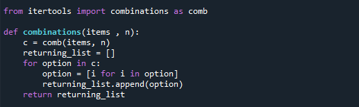

יש פה עניין של רקורסיה עם בקטרקינג ?
# Returns list of lists with all possible n-1 combinations of every sub list, by ignoring one element at a time
def all_sub_combinations(list_of_lists):
big_lst = []
i = 0
while i < len(list_of_lists):
j = 0
while j < len(list_of_lists[i]):
new_lst = list(list_of_lists[i]).copy()
new_lst.remove(new_lst[j])
if tuple(new_lst) not in big_lst: # Make sure only unique combinations are added
big_lst.append(tuple(new_lst))
j += 1
i += 1
return big_lst
def combinations(lst, n):
if len(lst) <= n:
return tuple(lst)
if type(lst) == str:
lst = list(lst)
i = 0
new_lst = [lst]
while i < len(lst) - n:
new_lst = all_sub_combinations(new_lst)
i += 1
return new_lst
{kind=link}
איך עשית שהרקע יפה כזה ובשחור? 
זה לא כתוב ביופיטר זה כתוב בתוכנה אחרת אם אני לא טועה הקראת visual studio
{kind=link}
{kind=link}
מישהו מהפותרים יכול לתת רמז?
אני שובר את הראש על זה עוד מאז שהאתגר התפרסם.
לא ברור לי איך אני גורם לפונקציה “לקפוץ” בין איברים כדי ליצור את תתי-הרשימות.
לדוגמה הרשימה: [1, 2, 3, 4] והמספר 3.
איך אני גורם לכך שהפונקציה תיצור את תת-הרשימה הראשונה [1, 2, 3] ואז “תקפוץ” באחד רק באיבר האחרון ותיצור את הרשימה [1, 2, 4].
וגם אני לא בטוח איך לחשב כמה פעמים הלולאה הזו צריכה לרוץ (כלומר כמה תתי-רשימות אמורות להיות לכל איבר ראשון).
אולי השיטה לא טובה ואני צריך לשנות אסטרטגיה?
@Alon.B.A
ל"קפיצה" הזו, אם אני לא טועה, קוראים Backtracking.
בקטרקינג (טרם נלמד), הינו אלגוריתם לפתרון בעיות המשתמש ברקורסיה על מנת לבנות פתרון בצורה תוספתית.
מה הכוונה?
בקטרקינג פותר מצבים שבהם נדרש לחזור לאחור כאשר הגעת למבוי סתום, או למעשה לפתרון שאתה לא צריך.
איך יודעים לזהות בעיות הדורשות בקטרקינג?
די פשוט, כשאתה צריך פתרון שיאפשר לך לחזור לאחור במבוי סתום ולכסות קומבינציות עד למציאת פתרון.
אתה מוזמן לקרוא עוד באינטרנט, חיפוש קצר בגוגל אמור לסדר אותך.
הנושא דורש תרגול והרבה אנשים מוכשרים מסתבכים איתו, שכן הוא דורש חשיבה מחוץ לקופסה.
תרגיל ממש טוב שקשור לנושא הזה נקרא בעיית N המלכות, חפש בגוגל.
בנוגע לתרגיל, תחשוב על זה בצורה הזו:
תחשוב על הפתרון הכי פשוט לבעיה שכזו, פתרון שלא דורש חשיבה.
למשל - כאשר ניתן לפונקציה הזו להרכיב רשימה של קומבינציות בעלות תו אחד, נקבל:
[[n1], [n2], [n3]… [len(list)-1]].
זוהי רשימה של רשימות המכילות קובינציות של תו אחד.
זהו למעשה תנאי היציאה שלך - כשמצב כזה קורה אתה מפסיק לבדוק אופציות נוספות.
אם אתה יודע לפתור את הבעיה ל-n-1 פעמים, אתה יודע לפתור את הבעיה גם ל-n פעמים, כשבכל איטרציה תשלח כמות תווים לקומבינציה - 1.
איך תוכל לשמור את המידע ולא לאבד אותו בכל איטרציה?
לייצר עותק של הקומבינציה (עותק של רשימה), כך שהרשימות לא דורסות אחת את השנייה בכל איטרציה.
קודמיי פרסמו פתרונות לתרגיל, כל אחד בדרכו. מציע לך כמובן לפתור לבד!
מקווה שלא סיבכתי או הטעיתי. בהצלחה!
@Alon.B.A
מבחינתי, הרעיון העיקרי פה היה רקורסיה.
אם הייתי מקבל את המספר 1 יחד עם הרשימה, האם הייתי יודע לפתור?
אם הייתי יודע כבר את הפתרון (הרשימת פלט) עבור המספר 1,
האם הייתי יודע להשתמש בה כדי לפתור עבור המספר 2?
וכן הלאה. אם הייתי יודע עבור המספר N, האם הייתי יודע לפתור עבור N+1?
כשעניתי כן על כל השאלות, אני יודע לפתור.
כדי למצוא עבור המספר 3 שנתת כדוגמה, אתחיל בלמצוא את הפתרון של 2.
לא למדנו break!! כצהצהצכחכלככלכלכלהצ
ים, מעניין אותי לדעת האם בהינתן אלגוריתם נכון לבעיה הזו, האם אתה תדע להוכיח מתמטית את נכונותו(?)
חג עצמאות שמח!
אני לא מתמטיקאי ואני לא מוכיח אלגוריתמים 
אבל אני יודע לעשות אחלה בטטות בתנור. אתה יודע, כל אחד ומה שהוא טוב בו
6 לייקים
וואלה אז בהזדמנות תעלה אלגוריתם יעיל להכנת בטטות כדי שאוכל לממש זאת בביתי חחח
לייק 1

תכלס מרגיש קצת רמאי להשתמש בitertools. כי זה עושה בדיוק את זה.
אני מכיר את זה מזה שנתקלתי בזה כבר בשאלה על הפוקר שהיה צריך לעשות את היד החזקה ביותר מבין כל האפשרויות שיש לאותו מתמודד.
במקום שורה 7 ניסיתי לעשות list(option) וזה משום מה לא עבד לי. אי אפשר להמיר tuple לרשימה ככה?
כל האתגר זה להשתמש בכלים שהשגת בקורס 
כל אחד יכול לפתור את זה בעזרת קצת אינטרנט, לא חוכמה
לייק 1